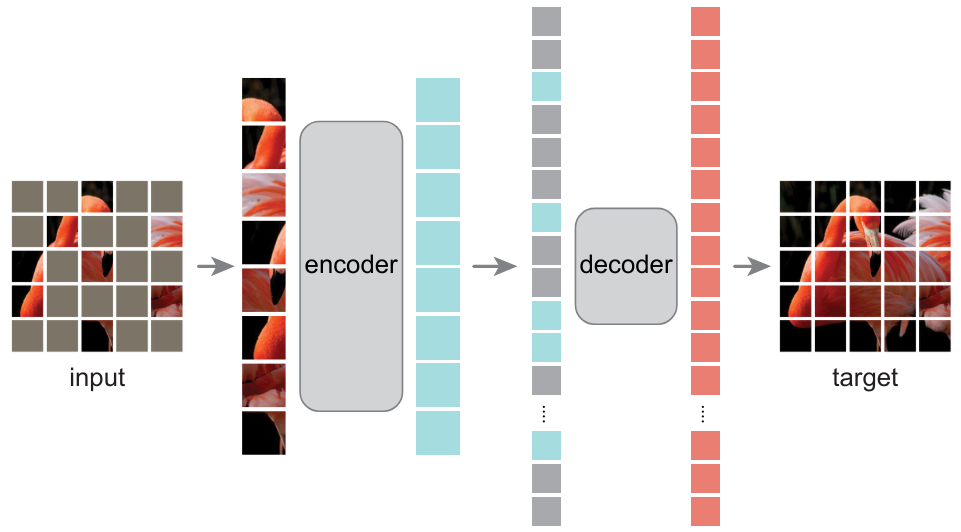

Aprendizaje contrastivo no supervisado#
Actualmente, gran parte de la investigación en deep learning se centra en el aprendizaje no supervisado. Como vimos en el curso 4 sobre autoencoders, este tipo de aprendizaje implica entrenar un modelo sin datos etiquetados. Su principal ventaja es que reduce significativamente los costos y el esfuerzo necesarios para preparar los datos. Este enfoque ha impulsado el procesamiento del lenguaje natural (NLP) y permite generar imágenes impresionantes con DALL·E o vídeos con SORA.
En el curso 5 sobre NLP, aprendimos a realizar aprendizaje no supervisado con texto (basta con tomar cualquier texto y entrenar al modelo para predecir el siguiente carácter). Sin embargo, en el procesamiento de imágenes, no hemos profundizado en este tema, excepto por una breve mención a CLIP en el curso 7 sobre transformers.
¿Cómo adaptar el aprendizaje contrastivo al aprendizaje no supervisado?#
Modelo CLIP#
Ya hemos visto el modelo CLIP en el curso 7, que se entrena de manera contrastiva dentro del batch. Este enfoque difiere de lo visto anteriormente: un vision transformer procesa las imágenes del batch, mientras que un text transformer procesa las descripciones de cada imagen. Luego, el modelo se entrena para asociar correctamente las imágenes y sus descripciones de manera contrastiva, minimizando la distancia entre los embeddings de una misma pareja y maximizando la de parejas diferentes.
CLIP es un modelo que utiliza una función de pérdida contrastiva, pero no es estrictamente no supervisado. Se basa en pares de imágenes/texto que actúan como etiquetas durante el entrenamiento.

Aprendizaje no supervisado para imágenes#
En el aprendizaje no supervisado, buscamos prescindir de datos etiquetados. El método SimCLR propone una técnica para aplicar el aprendizaje contrastivo en este contexto. La idea es procesar un batch de datos donde cada elemento es un par de imágenes. La particularidad es que se trata de la misma imagen transformada (consultar el curso bonus sobre aumento de datos). Cada imagen se pasa por una red idéntica (siamesa), y el modelo se entrena para minimizar la distancia entre las representaciones de las imágenes del mismo par y maximizar la de imágenes de pares diferentes.


En este método, el aumento de datos es crucial, y es importante no descuidar las posibles transformaciones. Para establecer una analogía con los pares positivos y negativos:
Pares positivos: Dos imágenes transformadas \(x_i\) y \(x_j\) que provienen de la misma imagen \(x\).
Pares negativos: Dos imágenes transformadas \(x_i\) y \(x'_j\) que provienen de imágenes diferentes \(x\) y \(x'\). Gracias a este enfoque, el modelo puede aprender representaciones relevantes de las imágenes sin necesidad de etiquetas. Así, puede distinguir imágenes que representan objetos distintos, aunque no sepa qué objetos son.
Ventajas de este enfoque#
Podríamos preguntarnos cuál es la utilidad de entrenar un modelo así. ¿Para qué sirve una vez entrenado? Para responder, podemos establecer una analogía con los modelos de lenguaje. Estos modelos primero se preentrenan con gran parte de los datos de Internet y luego se ajustan (fine-tune) para tareas específicas (como un chatbot para ChatGPT). Con las imágenes ocurre algo similar: los modelos entrenados de manera contrastiva con miles de millones de imágenes pueden servir como modelos genéricos que luego se ajustan para tareas más específicas, como la clasificación. Nota: El fine-tuning y el transfer learning se abordan en detalle en el siguiente curso. En esencia, son técnicas para reutilizar un modelo ya entrenado en diferentes tareas.
Alternativas al aprendizaje contrastivo para el aprendizaje no supervisado#
Es importante señalar que el aprendizaje contrastivo no es el único método para realizar aprendizaje no supervisado con imágenes.
Autoencoders#
Ya presentamos los autoencoders en el curso 4, que permiten aprender representaciones relevantes de imágenes. El artículo Masked Autoencoders Are Scalable Vision Learners demuestra que los masked autoencoders pueden usarse para aprender representaciones de imágenes muy útiles.

Redes generativas antagonistas (GAN)#
En este curso aún no hemos hablado de las GAN. Brevemente, son redes que se entrenan de manera antagonista: un generador crea imágenes falsas, mientras que un discriminador debe distinguir entre una imagen real y una generada. Al entrenarse juntos, se puede obtener un generador capaz de producir imágenes muy realistas sin necesidad de un conjunto de datos etiquetado. Hace algunos años, era el método más utilizado para la generación de imágenes (actualmente, se usan más los modelos de difusión, que también son no supervisados).

Predicción de transformaciones#
Otro enfoque consiste en predecir una transformación aplicada a la imagen. Por ejemplo, se puede rotar la imagen (RotNet) y entrenar al modelo para predecir esa rotación, o mezclar la imagen como un rompecabezas y entrenar al modelo para reconstruirla (JigSaw).

Destilación autosupervisada#
Más recientemente, los métodos basados en la destilación de conocimientos vuelven a utilizar transformaciones de imágenes, como en el aprendizaje contrastivo, pero sin emplear pares negativos. Para evitar que el modelo colapse, se usan diversas técnicas. Para más detalles, puedes leer el artículo DINO. Nota: El concepto de destilación de conocimientos se abordará en el siguiente curso.

Nota: La lista de métodos no supervisados no es exhaustiva, pero ahora tienes una buena idea de los enfoques existentes. Además, las GAN y los modelos de difusión son no supervisados, pero no se utilizan para crear modelos base que puedan ajustarse (fine-tune) para tareas más específicas.